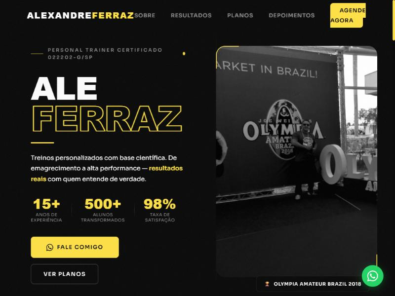
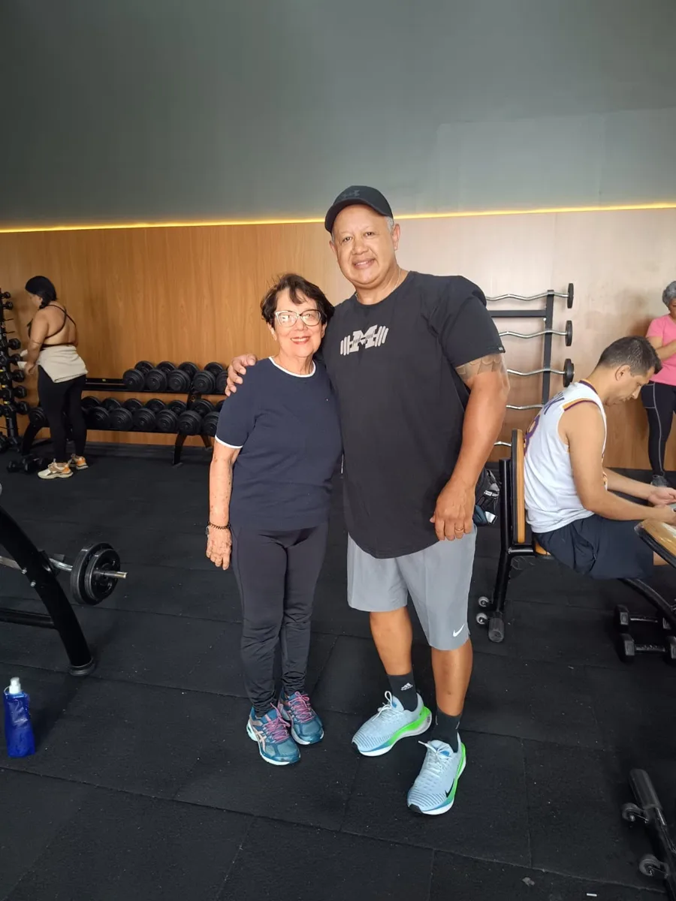
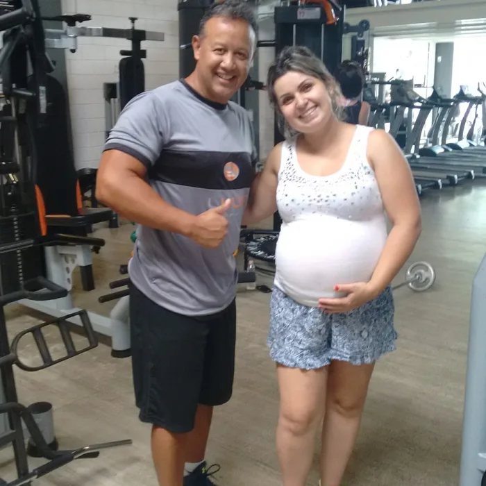
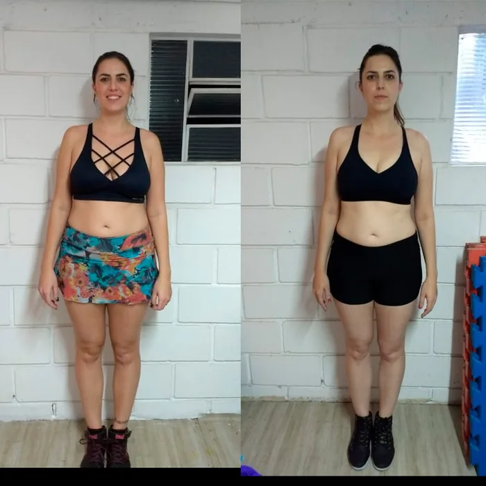
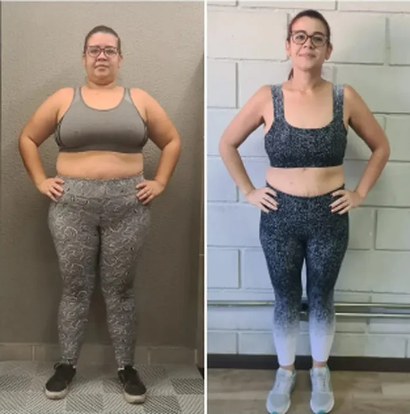

Direção visual para o novo site do Ale Ferraz: sair do tom de alta performance e falar com quem quer saúde, força e autonomia em qualquer idade, sem abrir mão de um site moderno, com efeitos e que converte em conversa no WhatsApp.
Fundo preto, amarelo ácido, letras gigantes em caixa alta, foto em preto e branco, faixa gritando "alto rendimento" e "Olympia". Tudo isso diz "atleta de competição". Uma pessoa de 65 anos com dor no joelho olha e pensa: isso não é pra mim.

A história do Ale continua sendo a mesma: 15 anos levando pessoas do zero ao resultado, inclusive atletas. O que muda é o foco da promessa. Em vez de "transforme seu corpo", o site passa a prometer o que esse público realmente quer: subir escada sem dor, brincar com o neto, voltar a confiar no próprio corpo.
"Movimento é saúde. Em qualquer idade."
Vai no hero. Direta, sem jargão, sem promessa de corpo.
Clínica de saúde premium, não academia de musculação. Luz, ar, espaço em branco, fotos coloridas e sorrindo. Tecnologia aparece como cuidado (precisão, acompanhamento), nunca como "cyber".
Como prova de competência técnica, em uma linha na seção Sobre: "Já preparou atletas para o Olympia Amateur Brazil. Hoje usa o mesmo rigor para cuidar de quem quer viver melhor." Sem foto de pódio no topo.
Mulheres e homens de 50 a 80 anos, e os filhos que procuram um personal para os pais.
Reabilitação e dor crônica, emagrecimento saudável, gestantes, iniciantes de qualquer idade.
"Nunca treinei", "tenho medo de me machucar", "preciso de liberação médica?", "é caro?".
Agendar uma avaliação pelo WhatsApp. Todo botão principal leva para isso.
Petróleo profundo no lugar do preto: transmite saúde, calma e confiança, e ainda dá contraste alto. Fundo claro com leve tom de verde para descansar os olhos. O amarelo da marca atual vira um mel dourado, usado só em detalhes: selos, ícones, sublinhados.
#0E3B3CTítulos, botões principais, faixas escuras#175556Hover, destaques em texto, anéis#F4F7F5Fundo da página#D6E6DESuperfícies suaves, chips, hover#E9B949Acento: selos, ícones, detalhes. Nunca texto sobre branco#9A6F0FRótulos pequenos em dourado sobre fundo claro#1E2A2ATexto corrido#4F605ETexto secundário#25D366Só no botão flutuante e no CTA finalPara leitores com mais idade a meta é AAA (7:1) em todo texto corrido. O site atual tem cinza sobre preto em 3,4:1, abaixo até do mínimo AA.
| Combinação | Amostra | Razão | Nível |
|---|---|---|---|
| Grafite sobre Névoa (texto corrido) | Treino seguro | 13,7 : 1 | AAA |
| Petróleo sobre Névoa (títulos) | Movimento | 11,4 : 1 | AAA |
| Branco sobre Petróleo (botões, faixa escura) | Agendar | 12,3 : 1 | AAA |
| Cinza-verde sobre Névoa (texto secundário) | Acompanhamento | 6,2 : 1 | AA (AAA em 18px+) |
| Mel sobre Petróleo (destaques na faixa escura) | 15 anos | 6,7 : 1 | AA+ |
| Petróleo sobre Sálvia (chips) | Gestantes | 9,5 : 1 | AAA |
| Mel escuro sobre Névoa (rótulos pequenos) | COMO FUNCIONA | 4,2 : 1 | AA (só em negrito, maiúsculas) |
A escolha do corpo de texto é a decisão mais "responsável" da proposta: a Atkinson Hyperlegible foi desenhada pelo Braille Institute para pessoas com baixa visão, diferenciando letras parecidas (I, l, 1; O, 0). Nos títulos, a Bricolage Grotesque dá o ar moderno e caloroso.
Cada treino começa com uma avaliação completa: histórico de saúde, mobilidade, equilíbrio e força. A partir dela o Ale monta um plano que respeita o seu ritmo e evolui com você. Illinois 1l0O.
Isso não é imagem: é HTML e CSS funcionando. Passe o mouse na foto, clique em A+ e A− na barra, veja a aurora se mover ao fundo. A foto colorida, em moldura de arco, troca a estética de pôster por retrato de confiança.
Treino personalizado, seguro e acompanhado de perto para você ganhar força, equilíbrio e autonomia. Do primeiro dia na academia à volta por cima depois de uma lesão.

Treino personalizado e seguro para ganhar força, equilíbrio e autonomia.
Filhos e netos abrem o link no WhatsApp e passam para os pais. Por isso: botão de agendar sempre visível, texto grande, um único objetivo por tela, e o botão do WhatsApp fixo com 56px de toque.
Treino seguro e acompanhado de perto para ganhar força e autonomia.
A regra: o efeito tem que servir à leitura ou à confiança. Movimento lento, nada pisca, nada pulsa, e tudo respeita a preferência "reduzir movimento" do sistema. Estes seis entram no site; cada card diz onde.
Manchas de sálvia e mel deslizando atrás do conteúdo, em 18 a 26 segundos. Selos e etiquetas flutuantes em vidro fosco por cima.
Hero · seção de planos
A foto inclina levemente seguindo o mouse (até 6 graus). No toque, fica parada. Moldura em arco substitui a borda de "cantos amarelos" do site atual.
Hero · Sobre · históriasContadores de 2 segundos quando a seção aparece. Já existe no site atual e fica.
Hero · SobreForça, equilíbrio, mobilidade e condicionamento desenhados como anéis que se preenchem. Visual de app de saúde, familiar para quem usa relógio ou celular.
Seção "Como funciona"Você controla o tamanho do texto.
Três níveis, lembrados no navegador da pessoa. Botão sempre visível na barra. É um recurso raro em site de personal e diz muito sobre cuidado.
Barra superior, todas as páginasCards sobem 14px e ganham opacidade com atraso de 150ms entre si. Conteúdo sempre legível, mesmo antes da animação.
Todas as seções com cardsO que fica de fora de propósito: fundo de vídeo, partículas, cursor customizado, texto com stroke, marquee rápido, badge pulsando. Todos aparecem em sites de academia e todos distraem o leitor que a gente quer alcançar.
Botões em pílula com 52px de altura (alvo confortável para dedo e para tremor nas mãos), cards com um só nível de borda, perguntas frequentes em sanfona, depoimentos com a fala em destaque.
"Treinei durante toda a gestação com o Ale e me senti segura e acolhida em cada sessão."
Pode. A maioria dos alunos do Ale começou do zero. A primeira aula é uma avaliação, sem peso, só para entender como seu corpo está hoje.
O treino é montado em torno da sua limitação, não apesar dela. Se precisar, o Ale pede liberação do seu médico antes.
Para maiores de 60 anos ou com condição de saúde conhecida, sim. É simples e protege você.
Continua sendo uma página única com rolagem. A ordem segue a cabeça de quem chega desconfiado: "isso é pra mim?", "como funciona?", "quem já fez?", "quanto custa?", "e se...?", "ok, como falo com ele?".
Frase-guia, foto nova, selo CREF, dois botões. Aurora ao fundo.
aurora · tilt · contadorCinco cards: terceira idade, reabilitação e dor, emagrecimento saudável, gestantes, iniciantes. Cada um com uma frase de objeção respondida.
cascataTrês passos reais: avaliação, plano, acompanhamento. Anéis dos pilares (força, equilíbrio, mobilidade, condicionamento).
anéisFoto colorida, 15 anos, CREF, formação. A competição entra aqui como credencial, em uma linha.
tilt · contadorGaleria calma (sem marquee acelerado) com fotos coloridas e legenda curta: gestante, 17 kg, 12 semanas. Novas fotos de alunos 60+ assim que existirem.
cascataTrês falas em destaque. Prioridade para alunos mais velhos ou em reabilitação.
Mesmos três planos e os extras, sem "vagas limitadas". Texto do botão: "Quero conhecer este plano".
vidroSanfona com as seis dúvidas que mais travam esse público. Fundamental para filhos que pesquisam pelos pais.
CTA final em WhatsApp, Instagram, horário de atendimento, local (ver decisões).
Rodapé enxuto. Botão de WhatsApp fixo em todas as telas e controle A+/A− na barra superior.
A troca de frases é tão importante quanto a troca de cores. Tudo que pressiona sai; tudo que acolhe e explica entra. O "você" continua, o tom é de conversa.
| Site atual | Site novo |
|---|---|
| 🔥 Garantir minha vaga → | Agendar minha avaliação |
| 🎯 Vagas limitadas — garanta sua vaga agora | Atendimento individual, com hora marcada |
| Transforme seu corpo e sua vida | Movimento é saúde. Em qualquer idade. |
| 500+ alunos transformados | 500 alunos acompanhados em 15 anos |
| Quero treinar forte com o plano de 5x por semana! | Olá Ale, quero saber mais sobre o plano de 5x por semana. |
| Resultado acelerado | Evolução consistente e segura |
| ALTO RENDIMENTO · OLYMPIA AMATEUR BRAZIL (na faixa do hero) | "Já preparou atletas para o Olympia Amateur Brazil. Hoje usa o mesmo rigor para cuidar de quem quer viver melhor." (na seção Sobre) |
| Condições especiais por tempo limitado! | Os valores podem ser ajustados ao seu caso. É só conversar. |
Nada de preto e branco com contraste alto. A regra para toda foto nova: luz natural ou da academia, aluno e Ale no mesmo plano, sem pose de pódio. O que já existe, classificado:


HTML, CSS e JavaScript puros, sem framework e sem build, como hoje. Fica fácil de hospedar em qualquer lugar (GitHub Pages, Vercel, Hostinger) e de o Rafael manter sozinho.
Tokens de cor e tipo, barra com A+/A−, hero com a foto nova, faixa de confiança. Já dá para o Ale ver e opinar.
Para quem é, como funciona com anéis, sobre, histórias, depoimentos, planos, FAQ, contato.
Aurora, tilt, contadores, cascata; reduzir movimento; foco visível; alvos de 48px; teste com leitor de tela.
Testes em 360, 768, 1024 e 1440px; imagens em WebP com tamanhos por tela; fontes com swap; meta de carregar em menos de 2s no 4G.
Título e descrição voltados a "personal trainer terceira idade [cidade]", dados estruturados de negócio local, Open Graph com a foto nova, favicon de verdade.
ale-personal-novo/ ├── index.html ├── css/ │ ├── tokens.css cores, fontes, espaçamentos │ └── style.css ├── js/ │ └── main.js A+/A−, contadores, anéis, tilt, cascata ├── images/ WebP otimizado + original ├── proposta/ este documento └── README.md
Nada disso trava a fase 1. Mas quanto antes vierem, menos retrabalho.